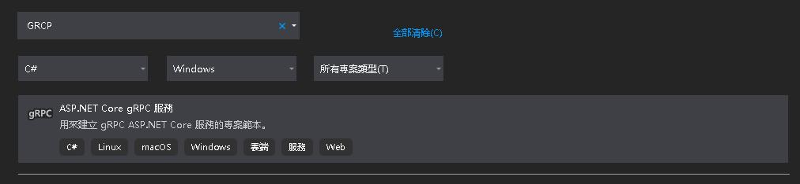

.Net5跟gRPC實作
使用VS內建模板建立專案

- VS本身有內建模板可以參考
- 通常我們專案會希望Server/Client參考相同的專案，所以不會直接使用模板建立
.proto檔建立
- gRPC須由.proto支持，可以參考
- 需參考的nuget套件
- Google.Protobuf
- Grpc.Core
- Grpc.Tools
- 比較常用到的類型有
- syntax: protpbuf版本
- package: 打包到指定的package包，有點類似C#的NameSpace
- option csharp_namespace: 因為我們使用的是C#，所以必須加上此項讓gRPC.Tool協助編譯
- message: 訊息結構，類似C#的class，這邊要注意須明確給定順序由1開始
- service: gRPC的服務項
- rpc: API介面
- enum: 列舉
- 資料型別
- import: 參考另外.proto檔
1 | syntax = "proto3"; |
gRPC主server建立
- 建立一個有程式進入點的.net5專案，範例用的是console
- 需參考的nuget套件
- Grpc.AspNetCore
- NLog.Web.AspNetCore: 這邊用nlog來協助寫日誌，官方建議搭配.net5用4.9以上版本
- NLog
Program.cs: 程式進入點
1
2
3
4
5
6
7
8
9
10
11
12
13
14
15static void Main(string[] args)
{
CreateHostBuilder(args).Build().Run();
}
public static IHostBuilder CreateHostBuilder(string[] args) =>
Host.CreateDefaultBuilder(args)
.UseServiceProviderFactory(new AutofacServiceProviderFactory())
.ConfigureWebHostDefaults(webBuilder =>
{
webBuilder
.UseUrls("https://*:8080") // gRPC連線要有TLS
.UseStartup<Startup>();
})
.UseNLog(); // 設定NLOG DIStartUp.cs: .NetCore設定類
1
2
3
4
5
6
7
8
9
10
11
12
13
14
15
16
17
18
19
20public void ConfigureServices(IServiceCollection services)
{
// 加入gRPC服務
services.AddGrpc();
}
public void Configure(IApplicationBuilder app, IWebHostEnvironment env)
{
if (env.IsDevelopment())
{
app.UseDeveloperExceptionPage();
}
app.UseRouting();
app.UseEndpoints(endpoints =>
{
// 繫結gRPC service
endpoints.MapGrpcService<MemberCommand>();
});
}實作gRPC Service
1
2
3
4
5
6
7
8
9
10
11
12
13// 繼承gRPC.Tool產出來的介面並複寫rpc方法
public class MemberCommand : MemberService.MemberServiceBase
{
public override Task<GetAllResponse> GetAll(GetAllRequest request, ServerCallContext context)
{
// do something
}
public override Task<Member> Insert(Member request, ServerCallContext context)
{
// do something
}
}
gRPC Client建立
- 需參考的nuget套件
- Grpc.Net.Client
- 取gRPC service資源方式
1
2
3
4
5
6
7
8
9
10
11
12var channel = GrpcChannel.ForAddress(@"https://localhost:8080");
var client = new MemberService.MemberServiceClient(channel);
var getAllResult = client.GetAll(
new GetAllRequest(),
// timeout 要用UTC時間
deadline: DateTime.UtcNow.AddSeconds(3));
var insertResult = client.Insert(
new Member(),
// timeout 要用UTC時間
deadline: DateTime.UtcNow.AddSeconds(3));